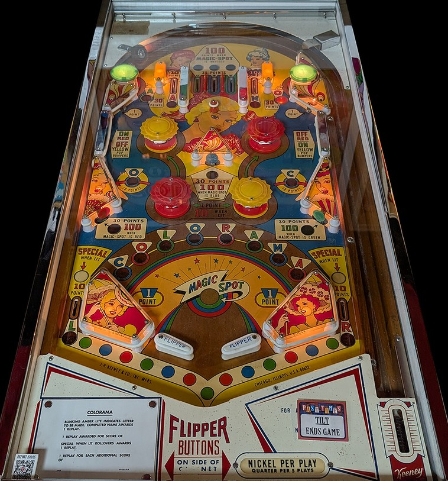

The colour of the Magic Spot near the flippers constantly cycles between red, blue, and green. The three middle top lanes are also red, blue, and green. Finally, the lower left standup target is red, the center standup target is blue, and the lower right standup target is green. Making one of these rollover lanes or standup targets when its corresponding colour is lit at the Magic Spot scores 100 points. If the Magic Spot does not match, 30 points are scored instead. Nothing on Colorama other than this feature gives more than 30 points, so shoot or plunge for these targets and lanes whenever possible to earn a high score.
Letters in Colorama are a carryover feature. Spelling Colorama in order resets the sequence and awards an instant Special, which can only be set to award a free game.
C is at the slanted wall switch on the right; red O is the top right passive bumper; L is the left out lane; blue O is the slanted wall switch on the left; R is the right out lane; green A is the top left passive bumper; M is the rollover lane just right of the three Magic Spot top lanes; and red A is the rollover lane just left of the three Magic Spot top lanes. The next letter that you need in the sequence will flash. The top passive bumpers always score 30 points; all other switches corresponding to Colorama letters score 10.
Either the red or yellow pop bumpers are lit at any one time. Pop bumpers score 1 point or 10 when lit. The middle left wall switch turns on the red bumpers and turns off the yellow bumpers, while the middle right wall switch does the opposite.
There are no in lanes. Mini-flippers back up directly to the slingshots, which always score 1 point. Out lanes, which have quite wide entrances, score 10 points and can be lit for the L or R in Colorama. These out lanes can also be lit for Special; I believe, but have not confirmed, that the out lanes light alternately for Special upon reaching a score of 1,000 points.
There is no end of ball bonus or extra ball feature. Tilt ends game, but only for the player who tilted.
The below picture of Colorama's playfield was taken from the Open Pinball Database.
